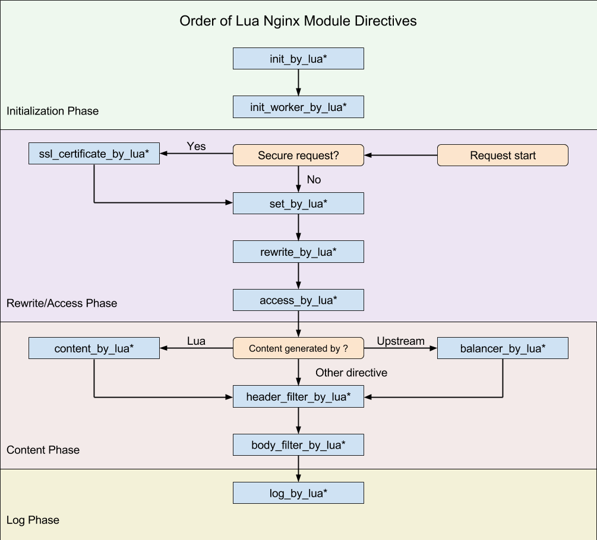
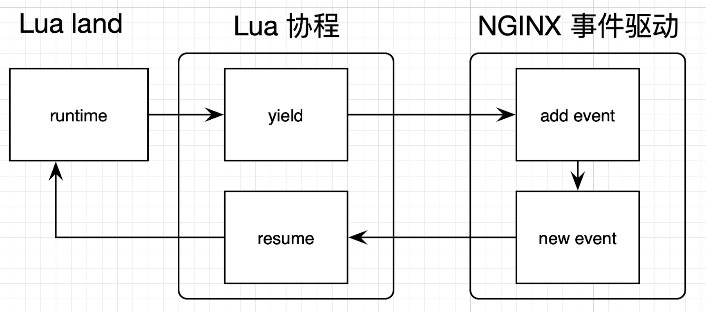
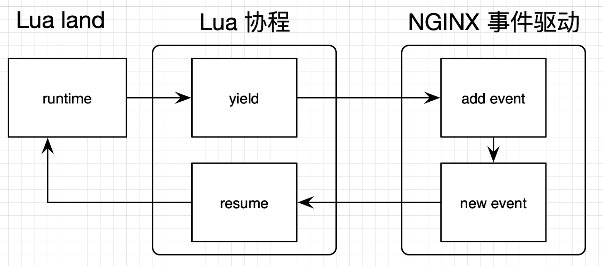

简介 #
OpenResty 是一个兼具开发效率和性能的服务端开发平台，基于 NGINX 实现，包含反向代理和负载均衡.
核心 #
NGINX 的一个 C 模块（lua-nginx-module）.
该模块将 LuaJIT 嵌入到 NGINX 服务器中，并对外提供一套完整的 Lua API，透明地支持非阻塞 I/O，提供了轻量级线程、定时器等高级抽象。
同时，围绕这个模块，OpenResty 构建了一套完备的测试框架、调试技术以及由 Lua 实现的周边功能库
- 用Lua 语言来进行
- 字符串和数值运算
- 查询数据库
- 发送 HTTP 请求
- 执行定时任务
- 调用外部命令
- …
- 可以用 FFI 的方式调用外部 C 函数
特性 #
OpenResty作者章亦春, 就职于淘宝,后就职于Cloudflare
- 详尽的文档和测试用例
- 同步非阻塞
- 动态
例子 #
cli #
$ resty -e "ngx.say('hello world')"
hello world
web #
events {
worker_connections 1024;
}
http {
server {
listen 8080;
location / {
content_by_lua '
ngx.say("hello, world")
';
}
}
}
openresty -p `pwd` -c conf/nginx.conf
$ curl -i 127.0.0.1:8080
HTTP/1.1 200 OK
Server: openresty/1.13.6.2
Content-Type: text/plain
Transfer-Encoding: chunked
Connection: keep-alive
hello, world
lua文件 #
$ mkdir lua
$ cat lua/hello.lua
ngx.say("hello, world")
pid logs/nginx.pid;
events {
worker_connections 1024;
}
http {
server {
listen 8080;
location / {
content_by_lua_file lua/hello.lua;
}
}
}
重启 OpenResty 的服务
$ sudo kill -HUP `cat logs/nginx.pid`
nginx #
OpenResty 的作者多年前写过一个nginx教程
NGINX 有 11 个执行阶段
typedef enum {
NGX_HTTP_POST_READ_PHASE = 0,
NGX_HTTP_SERVER_REWRITE_PHASE,
NGX_HTTP_FIND_CONFIG_PHASE,
NGX_HTTP_REWRITE_PHASE,
NGX_HTTP_POST_REWRITE_PHASE,
NGX_HTTP_PREACCESS_PHASE,
NGX_HTTP_ACCESS_PHASE,
NGX_HTTP_POST_ACCESS_PHASE,
NGX_HTTP_PRECONTENT_PHASE,
NGX_HTTP_CONTENT_PHASE,
NGX_HTTP_LOG_PHASE
} ngx_http_phases;
OpenResty 也有 11 个 *_by_lua指令 
- init_by_lua 只会在 Master 进程被创建时执行，
- init_worker_by_lua 只会在每个 Worker 进程被创建时执行。
- 其他的 *_by_lua 指令则是由终端请求触发，会被反复执行
业务代码
- set_by_lua：设置变量；
- rewrite_by_lua：转发、重定向等；
- access_by_lua：准入、权限等；
- content_by_lua：生成返回内容；
- header_filter_by_lua：应答头过滤处理；
- body_filter_by_lua：应答体过滤处理；
- log_by_lua：日志记录。
其他能用 Lua 代码解决的，尽量用代码来解决，而非使用Nginx 的模块和配置
luajit #
$ cat 1.lua
print("hello world")
$ luajit 1.lua
hello world
 
